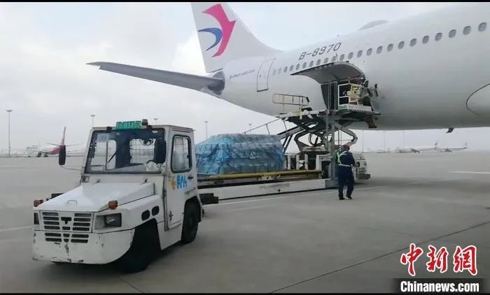
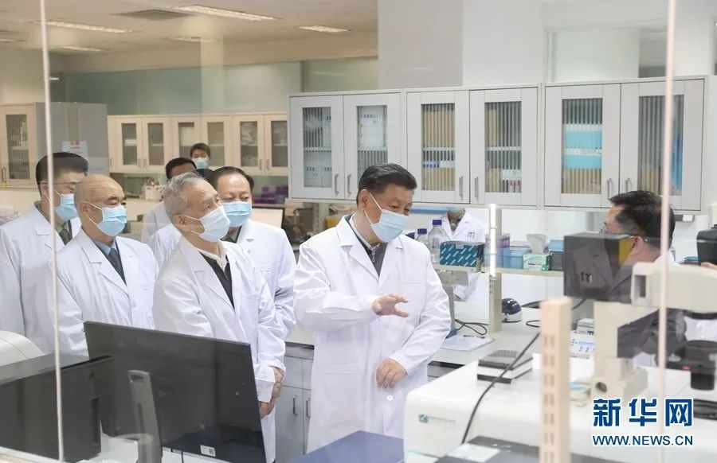
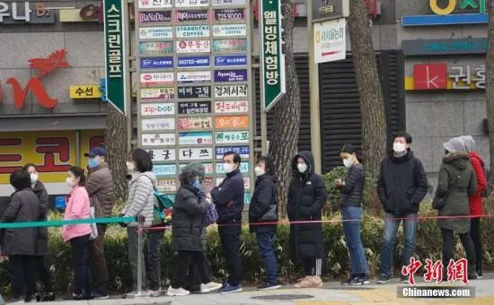
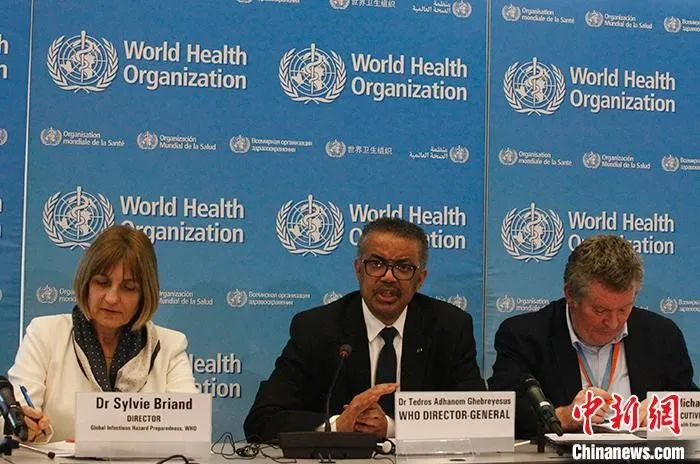

陈国强院士等学者发表特邀述评提出重大疫情“内部知情期”防控预案等五大建议
原文链接 备份链接 吃一堑, 长一智, 必须成为我们的不二选择! 总结经验, 吸取教训, 并认真组织实施, 将有力推动国家公共卫生治理体系建设和治理能力现代化征程! 文 | 黄 祺 从武汉发现不明原因肺炎至今，中国的新冠肺炎疫情已经持续 …

随着多国新冠肺炎感染者数量持续攀升，全球战疫进入关键时刻，“全球一盘棋、各国共进退”日益成为国际共识。
“积极开展抗疫国际合作”“维护地区和全球公共卫生安全”，这是一个多月来，中国最高领导人习近平在带领中国全力战疫之时，与世界密集“对话”中使用的高频表述。在此全球疫情告急时刻，这些表述显示出不一般的意义。
抗疫国际合作，单从短语本身看，是一个极其宏大的概念，但若回归习近平的公开表态、结合中国一系列“外向”行动，“抗疫国际合作”的内涵——怎么做、为什么——清晰具象，“器”“术”“法”“道”的中国古老智慧，成为最好的注脚。

3月2日，上海市捐赠韩国大邱、庆北地区的50万只口罩运至首尔。
“器”的层面，战疫过程中中国与世界始终在物资上互通有无。巴基斯坦拿出全国库存口罩给中国，蒙古国向中国捐赠3万只羊……此前中国接受了来自世界的善意与帮助，习近平多次向相关国家致谢。随着境外疫情升级，习近平越来越多提及“向其他出现疫情扩散的国家和地区提供力所能及的援助”。
经历过防控初始阶段的“口罩荒”“检测试剂供应不上”等困境，中国感同身受，特别了解疫情暴发国家尤其是一些卫生体系不稳固国家的“第一需求”。“投我以木桃，报之以琼瑶”，最近一段时间，中国力所能及地向巴基斯坦、日本、韩国、伊朗、非盟等国家和组织紧急捐赠医用物资。中国政府还向世界卫生组织捐款2000万美元，用以支持世卫组织开展抗击新冠肺炎疫情的国际合作。国与国之间同舟共济，在物资上的互通有无，以及所展现的情感上的患难与共，正是危急时刻展开国际合作最朴素的一步。

3月2日，中共中央总书记、国家主席、中央军委主席习近平在北京考察新冠肺炎防控科研攻关工作。这是习近平在军事医学研究院重大疫情应急防控药物研究室了解疫苗和抗体研制情况。新华社记者 丁海涛 摄
“术”的层面，中国从疫情暴发之初即与世界加强科研合作和数据分享。传染病防治是一个需要集成人类智慧合力解决的全球性难题。在谈到抗疫科技合作时，习近平特别指出，要加强“同有关国家特别是疫情高发国家在溯源、药物、疫苗、检测等方面的科研合作，共享科研数据和信息，共同研究提出应对策略”。
疫情暴发以来，中国及时通报疫情信息、分享部分毒株全基因组序列、在世卫组织框架下开展技术合作、与全球分享疫情防控和诊疗方案等多份技术文件……无不体现一个负责任大国应有的态度。全球化时代，人类命运休戚相关。面对疫情任何一个国家都无法独善其身，各国之间加强科研合作，科学家联手对抗疫情，不仅能加速人类战胜病毒的步伐，而且有助于构建更公开透明的环境，消除“信息疫情”，为全球联合抗疫创造清朗的舆论空间。

当地时间3月1日，在首尔钟路区一家超市外，民众排起长队等待购买口罩。中新社记者 曾鼐 摄
“法”的层面，在防控疫情的同时，中国亦致力于与世界各国共同构建全球公共卫生安全防控体系。习近平在与多位外国领导人的“对话”中提到，中方“既对本国人民生命安全和身体健康负责，也对全球公共卫生事业尽责”。观察认为，这显示中方不仅关切合力解决当下之急，更致力于促成机制化合作，推动构建全球公共卫生安全防控体系。
比如，“期待国际社会加强协调，为维护人类健康福祉而一起努力”“同相关国家密切沟通，分享防疫经验，协调防控措施”，体现了习近平对各国进一步提升政策协调“默契度”的期待。再如，推动建立地区之间乃至全球层面的“新契约”。习近平指出“加快落实中非合作论坛北京峰会‘八大行动’中的卫生健康行动，推进非洲疾控中心建设，加强中非公共卫生和疾病防控合作”，中方提出建立中国—东盟公共卫生应急联络机制……这些机制的搭建完善，将进一步为人类撑起全球公共卫生安全这把大伞。

资料图：2020年2月11日，世界卫生组织牵头召开的全球研究创新论坛在日内瓦揭幕，冀望商定新冠病毒研究路线图，同日世卫组织还宣布将新冠病毒引发疾病的英文名称命名为“COVID-19”。 中新社记者 德永健 摄
“我一直讲，人类是一个命运共同体。战胜关乎各国人民安危的疫病，团结合作是最有力的武器”——如果说前述三个层面阐明了“怎么把事做正确”，那么习近平反复强调的“人类命运共同体”，则从“道”的高度向外界解释了“什么是正确的事”。观察强调，这也正是此前世卫组织评价中国领导人面对大疫具有“足够领导力和政治意愿”的动力之源。
不管是西方智慧“没有人是一座孤岛”，还是古代波斯名句“亚当子孙皆兄弟，兄弟犹如手足亲”，抑或是中国古语“山川异域，日月同天”，无不彰显不同文明对守望相助、命运与共的共识。分析认为，这也正是习近平“公共卫生安全是人类面临的共同挑战，需要各国携手应对”的认知基础和行动指引。
来源：中国新闻社
值班编辑：庄梦蕾

原文链接 备份链接 吃一堑, 长一智, 必须成为我们的不二选择! 总结经验, 吸取教训, 并认真组织实施, 将有力推动国家公共卫生治理体系建设和治理能力现代化征程! 文 | 黄 祺 从武汉发现不明原因肺炎至今，中国的新冠肺炎疫情已经持续 …
原文链接 备份链接 Original 黄祺 新民周刊 新民周刊 About Feature 深度和角度——这就是我们能做的。 Today 突如其来的新冠肺炎疫情给我们上了沉重一课。这次付出的代价也许难以估量。吃一堑, 长一智, 必须成为我 …
原文链接 备份链接 财经十一人 财经十一人 About Feature 由《财经》杂志公司产业报道团队创建，研讨企业成败，探究行业兴衰，推动阳光商业 Today 新冠肺炎疫情暴发至今，确诊病例、死亡人数均已超过SARS，高福以往言论受到质 …
原文链接 备份链接 2020年全球GDP年增长率受疫情影响将降低0.2%左右几天前，新西兰渔民们把刚刚捕来的共100多吨大龙虾放生大海。当地媒体报道，中国传统春节是新西兰龙虾出口最畅销的时候，但今年受新冠状病毒疫情影响，中国客户纷纷取消 …
原文链接 备份链接 作为中国疾控中心原副主任，杨功焕是坦诚的。多年国际组织和疾控系统工作的经验让她对新冠病毒疫情中萌生的一些问题更加敏感。 她认可武汉“封城”，对中国公共卫生硬实力有信心，但又不满新冠病毒疫情初期的反应迟缓，质疑公共卫生的 …